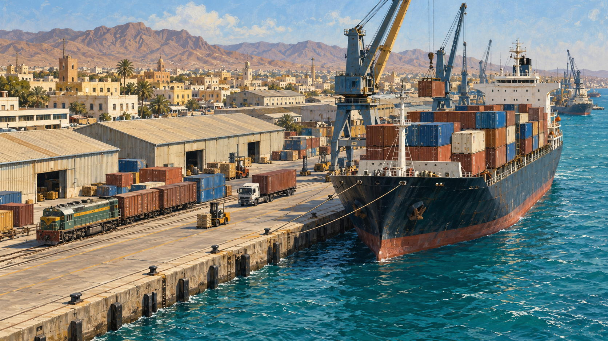

DRAFT FOR OWNER REVIEW — NOT APPROVED FOR PUBLICATION
Initial manuscript; research and image checks remain. مسودة أولى؛ البحث وفحص الصور لم يكتملَا.

A sack can cross a border once and appear differently in two countries’ accounts. The seller records a shipment leaving Sudan. The buyer records what arrived, perhaps in another month, at a price that includes transport and insurance. A third country may have handled the sale. Before anyone has falsified an invoice, the totals can already disagree.
That is an inconvenient starting point for an argument about Sudan’s missing export earnings. It is also an essential one. Sudan needs to investigate concealed trade and revenue leakage. It needs enough confidence in the investigation to distinguish a suspicious transaction from a statistical mismatch. Otherwise, a dramatic estimate can become a poor guide to what customs officers, banks and policymakers should actually do.
Our argument is that better trade statistics are productive infrastructure. They help the country decide what to manufacture, which imports keep businesses working, where exporters face unnecessary costs and where public revenue is being lost. A published table should be the beginning of those questions, not the end.
Economists call the comparison between one country’s exports and its partner’s corresponding imports a mirror comparison. The name suggests a perfect reflection. In practice, the mirror can distort.
UN trade-statistics guidance explains why indirect trade matters. An exporter may identify the country to which goods were dispatched, while an importer records their country of origin. Re-exports through an intermediary can therefore produce gaps even when each country follows its own reporting rules. The UN’s published example shows how identifying those indirect flows substantially changes the comparison. This is a methodological lesson, not evidence that a particular Sudanese discrepancy is innocent.[1]
Valuation is another issue. The price at an exporting border and the cost at the importing border may include different services. Timing, commodity classifications and revisions also need reconciliation. A serious investigation begins by asking whether the two columns measure the same thing. It should compare matching periods, products, partners and units, then document what remains unexplained.[2]
That work may sound less exciting than announcing a national loss. But it creates something much more useful: a smaller set of transactions and reporting practices that investigators can examine properly.
Global Financial Integrity’s 2020 Sudan report examined trade discrepancies during 2012–2018, with particular attention to gold and oil. It interpreted large gaps as evidence of trade-integrity problems and estimated possible fiscal losses. Its findings make a strong case for scrutiny, but the historical period must remain attached to the estimates. They are not a measurement of missing money in 2026.[3]
Nor should the entire difference between two reporting systems automatically be described as stolen revenue. Tax loss depends on the transaction, the applicable fiscal rules, what was actually paid and what adjustments the comparison requires. A gap is a reason to investigate. Establishing the amount owed demands additional evidence.
This distinction protects accountability rather than weakening it. A documented customs case can identify responsibility and withstand challenge. An aggregate number that mixes incompatible records may generate outrage without producing a recoverable claim.
Official merchandise statistics are not a photograph of every economic relationship across a border. Unrecorded commerce, missing declarations and incomplete reporting can leave goods outside the published total. A low recorded flow may therefore mean little trade, poor coverage or both. The answer has to be established for the route and product concerned.
There is also a difference between an unrecorded livelihood and a sophisticated scheme to conceal value. A small trader unable to use an expensive formal crossing should not automatically be treated as equivalent to a business deliberately misdescribing a shipment. Enforcement needs to distinguish them, while making legal trade accessible enough that smaller operators have a reason to enter the system.
Kandaka proposes pairing statistical reconciliation with practical border research: interviews with traders, transparent explanations of fees and examination of the time required to complete a transaction. Such work would not replace customs records. It would reveal why some commerce never becomes a reliable record in the first place. Researchers should protect participants and avoid publishing identifiable routes or details that expose vulnerable traders.
A country rebuilding productive capacity may import more machinery before it exports more finished goods. Treating every increase in imports as failure can encourage restrictions that make domestic production harder. The useful distinction is between the amount spent and what that expenditure enables.
Consider a hypothetical processor importing a packaging machine. Its purchase increases imports now. If it enables consistent quality, reduces spoilage and serves customers competitively, it may support later production. If the machine has no affordable spare parts or dependable power, the same purchase may become an idle asset. The customs value alone cannot decide between those outcomes.
That is why trade statistics should connect to evidence about firms, maintenance, employment and actual output. Our existing Five-Year Plan article discusses which imports might be replaced and which productive imports should be protected. Here the narrower point is that those choices require information beyond the headline deficit.[4]
Sudan could make its trade reporting more useful without pretending that every missing number can be solved immediately. A public release should explain its coverage, reporting period, valuation basis and revisions in ordinary language. Where partner-country comparisons are shown, the release should identify the matching method and the differences that remain unresolved.
For a limited number of important commodities, customs, the statistical authorities and the central bank could publish a reconciled account of physical quantity, declared value and recorded financial receipts, subject to lawful confidentiality protections. Differences between those measures should be explained rather than silently collapsed into a single total. Commercial details need protection; the methodology does not need secrecy.
Independent researchers should be able to reproduce published calculations from a documented dataset. A corrected estimate should remain traceable to its earlier version. Otherwise, a spreadsheet can change while the public debate continues to repeat a superseded number.
The measure of success would be better decisions: fewer avoidable obstacles for legitimate traders, more credible enforcement, clearer investment priorities and revenue claims grounded in evidence. Sudan does not need numbers that flatter it or condemn it in advance. It needs numbers that can answer a difficult question—and survive the next one.
References
[1] UN Statistics Division, bilateral asymmetries and indirect trade, 2021: https://comtradeapi.un.org/files/v1/app/wiki/ISI-bilateral_asymmetries-final-2021.pdf
[2] UN Statistics Division, Guidelines on Analyzing and Reducing Bilateral Asymmetry, 2019: https://comtradeapi.un.org/files/v1/app/wiki/Guidelines_on_Analyzing_and_Reducing_Bilateral_Asymmetry-23_Apr_2019.pdf
[3] Global Financial Integrity, Sudan and Trade Integrity, 2020: https://gfintegrity.org/report/sudan-and-trade-integrity/
[4] Kandaka, Sudan’s Next Five-Year Plan: https://kandaka.com/development/sudan-next-five-year-plan/
EDITORIAL CHECK STILL OPEN: add an independently reconciled Sudan/partner commodity example before final review. No original statistical replication is claimed in this draft. Proposed images and bilingual captions are in the series research ledger; no image has yet been approved for this article.